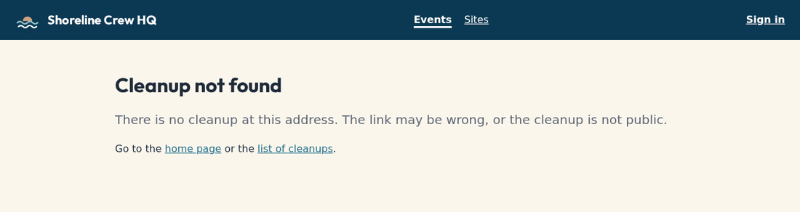

How to teach Session 16: the HQ loads before it renders (typed route loaders, a 404 turned into a route answer, one error page for every route, a deferred impact report, a pending sign), then decides who may come in (guard loaders with a safe ?next=, a 403 for the wrong role, a session store read with useSyncExternalStore, a sign-in route action); the last 30 minutes kick off the Part 2 project, Basalt Peak Climbing Gym.
lesson-23-end), and API answers come from the course API. Where the lesson shows the same command, the kit's output is the lesson's, word for word (times, thread counts and hashes differ on every machine). Ask for a prediction before every run.lesson_23.html open in a browser tab for the diagrams, the comparison tables and the screenshots. The lab lives in labs/module-16/: starter/ and TASKS.md are handouts; solution/ is yours until the session is over. The Part 2 project lives in labs/projects/part2-basalt-peak-routes/.Lesson 6.3 has more moving parts than any lesson so far (loaders, an error page, guards, a store, an action), and the temptation is to finish its project in the room. Do not: the half-wired app between Steps 2 and 5 is expected, and learners who leave without the Part 2 brief and a first milestone lose a week. Before: ask learners to arrive with the end of Lesson 6.2 and npx tsc -b clean (lesson-23-start is the catch-up), and run the project's install once on your machine so your npm cache can serve the room. In the room: start the kickoff at 2:20 whatever happens; cut from the demo list below. After: Steps 3 to 6 go home; Session 17 starts from the Part 2 project at its first milestone (R1 and R2 working, R3 started).
labs/module-16/ folder without solution/; from the course site's downloads lesson-23-start.zip (the end of Lesson 6.2, where 6.3 starts) and lesson-23-end.zip (the end of 6.3); the Part 2 project folder labs/projects/part2-basalt-peak-routes/ without its solution/ (BRIEF.md, RUBRIC.md, TASKS.md, starter/). Run npm install once in the lab's starter/ and in the project's starter/ at home so your npm cache can serve the room.python3 labs/check_labs.py module-16 from this kit's folder (6 runs, under half a minute: the starter fails as shipped, the solution passes its tests, type check and lint, and the solution without the child loader's guard call fails exactly three tests) and python3 labs/check_labs.py projects/part2-basalt-peak-routes (8 runs: the starter's 12 tests fail with their TODOs while it type-checks and lints cleanly; the model solution passes its tests, tsc, lint and the build; the API answers its smoke test). No course API is needed for either.lesson-23-end for the code; two terminals ("api": node server.ts --latency=1500 in shoreline-api for the pending demo, restarted without it afterwards; "hq": npm run dev in shoreline-hq) at 18 pt or larger; a browser with DevTools docked at the bottom (Elements and Network panels). The sample accounts sign in with the password shoreline-demo: Maya Okafor (maya.okafor@example.com, organizer) and Theo Nakamura (theo.nakamura@example.com, volunteer).starter/ open in a third VS Code window with its two terminals ready (npm run api, npm run dev), and Dana Okonkwo-Reyes's email from BRIEF.md on a slide or printed.organizersOnly above events/new and volunteers.| Symptom | Cause | Fix |
|---|---|---|
npm run lint: React Hook "useAuth" is called in function "organizersOnly"… | A Hook in a loader: loaders run outside React | readSession() from the store in client.ts. |
npm run lint: only-export-components on a loader | A loader exported from the page's .tsx file | Loaders in pages/loaders.ts; the page uses import type for typeof. |
A typo after useLoaderData() compiles | No type argument: the data is any | useLoaderData<typeof sitesLoader>() every time. |
| The sites page shows the error page between Steps 1 and 5 | The page reads loader data, the route has no loader yet | Expected (the lesson says so): Step 5 wires the router. |
| The crew search loses the cursor while typing | A loader on the route (the guard) without shouldRevalidate | shouldRevalidate: onlyWhenThePathChanges on the guard route. |
| After sign-in the browser leaves the HQ, or loops back to sign-in | ?next= used without a check, or not encoded | nextPath(url); encodeURIComponent(pathname + search) in the guard. |
| One 401 in the Console when signing out on /volunteers | useApi's viewer change runs once before the guard's redirect | Expected (the lesson's troubleshooting note); nothing to fix. |
npm run api fails in the Part 2 project: address already in use | Something already listens on port 4400 | Stop the other copy (Ctrl+C in its terminal); the project API never uses shoreline-api's 4000. |
| Clock | Minutes | Segment | What happens |
|---|---|---|---|
| 0:00 | 10 | Warm-up: from Session 15 to guarded routes | Three retrieval questions on Session 15 (the open planning form, typed search params, nested routes); who has the HQ at the end of Lesson 6.2. |
| 0:10 | 10 | 6.3 Frame and mental model | Render then fetch or load then render; the harbor master; what a loader can hand over, redirect or refuse. |
| 0:20 | 25 | 6.3 Live demo: loaders and route answers | A loader and its typed data, any without the type argument, the 404 as a route answer, one ErrorPage, await or return a promise, the pending sign. |
| 0:45 | 20 | 6.3 Guided lab | labs/module-16/l6_3-data-loading-and-protected-routes/starter: Task 1 in pairs, a typed loader and one error page. |
| 1:05 | 10 | Break | Learners without the end of Lesson 6.2 unzip lesson-23-start (and npm install) so the project block starts level. |
| 1:15 | 20 | 6.3 Live demo: guards, the store and an action | organizersOnly and the API's 401/403, nextPath and open redirects, the session store, a Hook in a loader, the sign-in action, the pathless guard route and shouldRevalidate. |
| 1:35 | 15 | 6.3 Guided lab, continued | Task 2: the guard, a safe ?next= and a child loader that checks first. |
| 1:50 | 30 | 6.3 Start the lesson project | Steps 1 and 2: loaders.ts, ErrorPage, SitesPage, the event page and ImpactSummary. Steps 3 to 6 go home. |
| 2:20 | 30 | Part 2 project kickoff | Basalt Peak Climbing Gym: the client's email, R1 to R6, two terminals, what the starter gives, the Session 17 milestone, pairs, hand-in. |
| 2:50 | 10 | Wrap-up | Exit ticket (3 questions), homework, bring list for Session 17. |
| Total | 180 | Ends at 3:00. |
In the room. The lesson page estimates 155 minutes for a learner working alone; after the warm-up, the break, the kickoff and the wrap-up the room has 120 for it. It keeps its full shape (model, two demo-and-lab rounds, the project start); the project's later steps, the exercises and the quiz are homework.
Goes home (about 2 to 3 hours). Lesson 6.3's project Steps 3 to 6 (the session store, guards and the sign-in action, connecting the router, trying it as three people and the checks); Exercises 1 and 2 (part of the lesson time); the Quick Quiz; the journal; the lab's Task 3 and stretch; and the Part 2 project's first milestone for Session 17 (R1 and R2 working, R3 started). Anyone who fell behind finishes the lesson project from lesson-23-start, or picks up the finished HQ in lesson-23-end: Part 3 starts from it.
Protect, in this order: the kickoff (at least 20 minutes: the email, R1 to R6, two terminals running, the milestone); the project's Steps 1 and 2; typed useLoaderData and the 404 as a route answer; the guard with nextPath. Cut first: the open-redirect run and the wrong-password API call in demo 2 (both are in the lesson), then the render-then-fetch opening (describe it), then the second lab block (Task 2 goes home).
| 6m | Three retrieval questions (workbook Warm-up box), answered in pairs, then shared |
| 4m | Where everyone's HQ is: npx tsc -b clean at the end of Lesson 6.2? Catch-up plan for anyone who is not |
nextPath, W3 sets up the pathless guard route and the parallel loaders.npx tsc -b clean? Anyone without it unzips lesson-23-start now (copy .env.example to .env.local, npm install in shoreline-hq, start the API) while you frame 6.3; they are ready by the project block.POST /api/events answers 401 without a token (Lesson 5.2). Today's guard adds the courtesy: guests are sent to sign in, then straight back.string | null; readParam with a type predicate (isEventStatus) and ?? 'all', never as. Today ?next= is the same kind of outside input, and nextPath checks it.<Outlet />; the parent stays mounted. Today a route with no path holds the guard, and every page below it is a child. New twist: the parent's loader and a child's loader run at the same time.| 10m | Frame: render then fetch or load then render; the harbor master |
| 25m | Live demo 1: a loader and its type, any, the 404 as a route answer, one ErrorPage, await or a promise, the pending sign |
| 20m | Guided lab: l6_3-data-loading-and-protected-routes/starter, Task 1 in pairs |
| 20m | Live demo 2 (after the break): guards, nextPath, the store, a Hook in a loader, the action, the guard route |
| 15m | Guided lab, continued: Task 2 |
| 30m | Start the lesson project: Steps 1 and 2 |
From the lesson: "Before a crew boat leaves the dock, the harbor master checks two things: the tide table (is the information ready?) and the permit (is this crew allowed out?). Only then does the boat move. A loader is the harbor master for a route. It can hand over the tide table (data), send the boat to another dock first (a redirect to sign-in), or post a notice explaining why the trip is off (an error page). The page itself only ever sees a boat that was cleared to go."
Then the three costs of render then fetch, which learners have all met: a flash on every visit, Back that cannot find its place, rules that arrive late (a page that guards itself has already started to draw). And the honest limit: "Load then render is not always better. A search box that changes the list with every letter should not freeze the page while each request runs; the events list keeps its useApi today, and Lesson 7.1's cache is the real answer."
After the break, the second model: "In Lesson 5.2 the session was something one component remembered. Now it is a notice pinned on the harbor board: anyone can read it, the harbor office (client.ts) is the only one who changes it, and the people who care asked to be told when a new notice goes up."
On the projector, the HQ at the end of Lesson 6.2 for the first step, then the code at the end of Lesson 6.3 (lesson-23-end) and its scratch files. The outputs below come from a copy of that code exactly as a learner has it.
node server.ts --latency=1500 in the "api" terminal) and the HQ at the end of Lesson 6.2. Click a cleanup: "Loading the cleanup…", then the page. Scroll the sites page down, Events, Back: the top of the page. Ask: "Which of the three costs from the lesson did you just see?" (the flash, Back losing the place; the third, rules arriving late, is the Volunteers page guarding itself in its own render).params and a web request (its url, its signal). Whatever it returns becomes the route's data:
/** /sites: the six beach sites */ export function sitesLoader({ request }: LoaderFunctionArgs) { // request.signal: leaving the page before the answer arrives cancels the request return getSites(request.signal) }Then the page:
useLoaderData<typeof sitesLoader>() with an import type. "TypeScript cannot know which loader belongs to which page, because they meet only in the route list. You tell it, with the loader's own type."src/Scratch.tsx: put each result where a number is expected, and predict which lines fail.
import { useActionData, useLoaderData } from 'react-router' import type { signInAction } from './auth/signInAction.ts' import type { eventLoader, sitesLoader } from './pages/loaders.ts' // Ask TypeScript what each Hook returns: put the answer where a number is expected export function Scratch() { const sites: number = useLoaderData<typeof sitesLoader>() const page: number = useLoaderData<typeof eventLoader>() const result: number = useActionData<typeof signInAction>() const untyped: number = useLoaderData() return <p>{sites}{page}{result}{untyped}</p> }
src/Scratch.tsx:7:9 - error TS2322: Type 'Site[]' is not assignable to type 'number'.
7 const sites: number = useLoaderData<typeof sitesLoader>()
~~~~~
src/Scratch.tsx:8:9 - error TS2322: Type '{ event: CleanupEventDetail; impact: Promise<ImpactReport> | null; }' is not assignable to type 'number'.
8 const page: number = useLoaderData<typeof eventLoader>()
~~~~
src/Scratch.tsx:9:9 - error TS2322: Type 'SignInResult | undefined' is not assignable to type 'number'.
Type 'undefined' is not assignable to type 'number'.
9 const result: number = useActionData<typeof signInAction>()
~~~~~~
Found 3 errors in the same file, starting at: src/Scratch.tsx:7
Three exact types, and line 10 (untyped) says nothing at all: any is assignable to everything. Delete the scratch file.import { useLoaderData } from 'react-router' // No type argument: useLoaderData() returns any, so this typo compiles export function Scratch() { const sites = useLoaderData() return <p>{sites[0].nmae}</p> }
npx tsc -b prints nothing (the kit ran it). With useLoaderData<typeof sitesLoader>() the same typo is an error.http://localhost:4000/api/events/e99
HTTP/1.1 404 Not Found
content-type: application/json; charset=utf-8
{
"error": "not_found",
"message": "No cleanup event with that id."
}
Then the loader: it awaits the cleanup, turns that 404 into data(message, { status: 404, statusText: 'Cleanup not found' }) and starts the impact report without waiting. Throwing keeps the return type clean: TypeScript infers only what is returned.
/** /events/:eventId: the cleanup now, its impact report (if it has one) when it arrives */ export async function eventLoader({ params, request }: LoaderFunctionArgs) { const { eventId } = params if (eventId === undefined) { throw new Error('eventLoader needs a route with an :eventId parameter') } try { const event = await getEvent(eventId, request.signal) // Not awaited: the page shows without it, and the report follows (use() + Suspense) const impact = event.status === 'completed' ? getImpact(eventId) : null return { event, impact } } catch (error: unknown) { if (error instanceof ApiError && error.status === 404) { const message = 'There is no cleanup at this address. The link may be wrong, or the cleanup is not public.' throw data(message, { status: 404, statusText: 'Cleanup not found' }) } throw error } }
useRouteError() is unknown, honestly: a loader can throw anything. isRouteErrorResponse narrows it to an answer with status, statusText and data (typed any, so check typeof).
import { isRouteErrorResponse, Link, useLocation, useNavigate, useRouteError } from 'react-router' import { describeError } from '../api/client.ts' import { Button } from '../components/Button.tsx' import { useDocumentTitle } from '../hooks/useDocumentTitle.ts' import styles from './Page.module.css' // The router shows this instead of a page that could not load or crashed; the header and footer stay export function ErrorPage() { const error = useRouteError() const location = useLocation() const navigate = useNavigate() // A loader's answer (thrown with data()) carries a status, a heading and a message const answer = isRouteErrorResponse(error) ? error : null const heading = answer?.statusText || 'Something went wrong on this page' useDocumentTitle(heading) if (answer !== null) { return ( <> <h1>{heading}</h1> <p className={styles.lead}> {typeof answer.data === 'string' ? answer.data : 'There is nothing to show at this address.'} </p> <p> Go to the <Link to="/">home page</Link> or the <Link to="/events">list of cleanups</Link>. </p> </> ) } // Anything else: a request that failed, or a bug in a component return ( <div role="alert"> <h1>{heading}</h1> <p>{describeError(error)}</p> <p> <Button onClick={() => navigate(location, { replace: true })}>Try again</Button>{' '} <Link to="/">Go to the home page</Link> </p> </div> ) }Show the lesson's screenshot of /events/e99 (heading, sentence, header and footer kept, no
role="alert": an answer, not an alarm). With the API stopped, Sites shows "Could not reach the server…" and Try again (navigate(location, { replace: true }) re-runs the loaders).use()s it inside Suspense (Lesson 4.4's pattern; the loader's data is stable, so eventPromises.ts can go). Then one place shows that something is on its way:
// 'loading' while the next page's loaders run; the current page stays on screen until then const busy = useNavigation().state === 'loading' const { revalidate } = useRevalidator()With
--latency=1500, click a cleanup: the list fades, the pill says Loading…, the address changes only when the page does (the lesson's screenshot). Then sites → Events → Back: the scroll comes back, because the list is full height before the router restores it.redirect() for guests (the address they asked for goes into ?next=, encoded: an address inside an address) and data(…, { status: 403 }) for people who are signed in but not allowed.
/** For pages with contact details and planning tools: guests sign in first, volunteers are turned away */ export function organizersOnly({ request }: LoaderFunctionArgs) { const session = readSession() if (session === null) { // Remember the page (and its ?search) so the sign-in page can send people back to it const { pathname, search } = new URL(request.url) throw redirect(`/sign-in?next=${encodeURIComponent(pathname + search)}`) } if (session.user.role !== 'organizer') { const message = "This page has the crew's contact details and planning tools, so only organizers can open it." throw data(message, { status: 403, statusText: 'Organizers only' }) } return null }Then the lock behind the courtesy, the API without a token and with a volunteer's (below). "Everything in the HQ runs in the visitor's browser. The guard gives people a clear path; the API keeps the data safe."
http://localhost:4000/api/volunteers
HTTP/1.1 401 Unauthorized
content-type: application/json; charset=utf-8
{
"error": "unauthorized",
"message": "Sign in first."
}
HTTP/1.1 403 Forbidden
content-type: application/json; charset=utf-8
{
"error": "forbidden",
"message": "Only organizers can do that."
}?next= says: /sign-in?next=https://elsewhere.example, after a REAL sign-in, would hand an organizer to someone else's page. The stage's own function, run in Node on the awkward values (predict each line first):
// nextPath, copied from src/auth/guards.ts: it needs nothing but URL export function nextPath(url: URL): string { const next = url.searchParams.get('next') if (next === null || !next.startsWith('/') || next.startsWith('//') || next.startsWith('/\\')) { return '/' } return next } // What the guard puts in ?next=: an address inside an address, so it is encoded console.log(encodeURIComponent('/volunteers?skill=first-aid')) for (const next of ['/volunteers?skill=first-aid', 'events', '//example.com', 'https://elsewhere.example', '/\\elsewhere.example']) { const url = new URL(`http://localhost:5173/sign-in?next=${encodeURIComponent(next)}`) console.log(next.padEnd(28), '->', nextPath(url)) }
%2Fvolunteers%3Fskill%3Dfirst-aid /volunteers?skill=first-aid -> /volunteers?skill=first-aid events -> / //example.com -> / https://elsewhere.example -> / /\elsewhere.example -> /Only paths that start with one
/. The first line is what the guard writes for a guest who asked for the crew filtered by first aid.useAuth(). Three outsiders need the session (the guards, the sign-in action, request() on a 401), so it moves to client.ts:
// The session lives here, outside React, so loaders and actions can read and change it too let current = loadSession() const listeners = new Set<() => void>() /** The current session, or null when nobody is signed in */ export function readSession(): Session | null { return current } /** Save (or with null, forget) the session, and tell everyone who listens */ export function saveSession(session: Session | null): void { if (session === null) { sessionStorage.removeItem(sessionKey) } else { sessionStorage.setItem(sessionKey, JSON.stringify(session)) } current = session for (const listener of listeners) { listener() } } /** Call listener after every sign-in and sign-out. Returns a function that stops listening. */ export function onSessionChange(listener: () => void): () => void { listeners.add(listener) return () => { listeners.delete(listener) } }AuthProvider subscribes with
useSyncExternalStore(onSessionChange, readSession). The snapshot must be the same object until the session changes, which is why readSession() returns current instead of parsing sessionStorage (self-check Q12).const { session } = useAuth(). npx tsc -b prints nothing (the kit ran it); npm run lint stops it with an ERROR:
× react-hooks(rules-of-hooks): React Hook "useAuth" is called in function "organizersOnly" that is neither a React function component nor a custom React Hook function. React component names must start with an uppercase letter. React Hook names must start with the word "use".
╭─[src/auth/guards.ts:20:23]
18 │ /** For pages with contact details and planning tools: guests sign in first, volunteers are turned away */
19 │ export function organizersOnly({ request }: LoaderFunctionArgs) {
· ───────┬──────
· ╰── Outer function
20 │ const { session } = useAuth()
· ───┬───
· ╰── Hook is called here
21 │ if (session === null) {
╰────
Found 0 warnings and 1 error.
Hooks only work while a component renders; a loader has no render to belong to.export async function signInAction({ request }: ActionFunctionArgs): Promise<SignInResult> { const formData = await request.formData() const email = formData.get('email') const password = formData.get('password') if (typeof email !== 'string' || typeof password !== 'string') { return { email: '', fieldErrors: {}, message: 'The form is missing a field.' } } try { saveSession(await postSignIn({ email, password })) } catch (error: unknown) { // The API's answers are written for people: "Enter your password.", "Email or password is incorrect." if (error instanceof ApiError && error.fieldErrors !== undefined) { return { email, fieldErrors: error.fieldErrors, message: '' } } if (error instanceof ApiError && error.status === 401) { return { email, fieldErrors: {}, message: error.message } } console.error(error) return { email, fieldErrors: {}, message: describeError(error) } } // Signed in: on to the page that sent them here (or home) throw redirect(nextPath(new URL(request.url))) }A wrong password: the API's answer (below) comes back as the action's result, the address keeps
?next= (a Form with no action attribute posts to the current address), the page empties the password through its ref. Success: throw redirect(nextPath(...)), then the router runs the next page's loaders.http://localhost:4000/api/auth/sign-in (POST, wrong password)
HTTP/1.1 401 Unauthorized
content-type: application/json; charset=utf-8
{
"error": "unauthorized",
"message": "Email or password is incorrect."
}// Organizers only: this guard runs before any of these pages appears loader: organizersOnly, shouldRevalidate: onlyWhenThePathChanges, children: [ { path: 'events/new', element: <NewEventPage /> }, { path: 'volunteers', element: <VolunteersPage />, // Nested routes: they render inside VolunteersPage, at its <Outlet /> children: [ { index: true, element: <p>Pick a name from the list to see their details.</p> }, { path: ':volunteerId', element: <VolunteerPage /> }, ], }, ], },
shouldRevalidate: by default the router re-runs a route's loader whenever the search changes, and a navigation with a loader waits for it, even an instant one. Measured without it: "mra", two places left, "a" gave "mara" with the cursor at position 4. Both versions type-check and lint cleanly.useLoaderData() without its type. Everything compiles, and so does every typo. Coach: "Hover site: what does VS Code say?" (any). Then import type { sitesLoader } and typeof. (Self-check Q2.)useAuth() in a guard. It type-checks; oxlint stops it with an error. Coach: "When does a Hook run, and when does a loader run?" Then readSession(). (Self-check Q8.)Folder: learners work in labs/module-16/l6_3-data-loading-and-protected-routes/starter/ (task sheet labs/module-16/l6_3-data-loading-and-protected-routes/TASKS.md); your reference is labs/module-16/l6_3-data-loading-and-protected-routes/solution/. A small site desk, separate from the HQ: a page for one beach site whose loader fetches it, one error page for every route, a crew list only organizers may open, a sign-in form handled by a route action. The tests put the learner's own route list in createMemoryRouter, render it with RouterProvider, and MSW answers with real shoreline-api answers, so no browser and no API are needed. Needs npm install once in starter/ (the same packages as Session 15's labs).
npm install, then npm test: Tests 8 failed (8); scroll once to the first failure, the starter's error page saying TODO 1. Then npm run typecheck: one error, in the TEST file, Task 1's type test (first line):src/lab.test.tsx:81:72 - error TS2344: Type 'Site' does not satisfy the constraint '{ description: "Expected: string, Actual: never"; id: "Expected: string, Actual: never"; name: "Expected: string, Actual: never"; parking: "Expected: string, Actual: never"; terrain: "Expected: literal string: marsh, Actual: never" | ... 2 more ... | "Expected: literal string: sand, Actual: never"; town: "Expected:
Found 1 error in src/lab.test.tsx:81siteLoader (await getSite, the 404 turned into data(…, { status: 404, statusText: 'Site not found' })), the loader on the route, useLoaderData<typeof siteLoader>(), the ErrorPage with isRouteErrorResponse. Circulate for a loader that RETURNS the data() answer instead of throwing it (the page then gets the answer as its data, and the type test fails: ask "what does TypeScript think the loader returns now?"), and for an ErrorPage that puts the 404 in a role="alert".Site not found not an alert, and the 500 one is?" (an answer the app expected versus a failure).nextPath, crewOnly, the pathless guard route. Most pairs reach a state where one test still fails with the lab's own message: let them read it. That is the lesson's Exercise 3, in a test. The solution without the child loader's guard call (a run of the kit's checker) fails these three:× Task 2: a guest is sent to sign in, the way back in ?next=, and the crew is never requested × Task 2: a volunteer gets the 403 answer, and the crew is never requested × Task 3: signing in goes back to the page the guard remembered Tests 3 failed | 5 passed (8)
✓ Task 1: the site page appears with the data its loader fetched ✓ Task 1: an unknown id is the route answer 'Site not found', not an alarm ✓ Task 1: a request that fails shows the alert with the reason ✓ Task 2: nextPath keeps paths inside the app and nothing else ✓ Task 2: a guest is sent to sign in, the way back in ?next=, and the crew is never requested ✓ Task 2: a volunteer gets the 403 answer, and the crew is never requested ✓ Task 3: a wrong password keeps the address, the email and the way back ✓ Task 3: signing in goes back to the page the guard remembered Tests 8 passed (8)
request.formData(), typeof checks, saveSession, the 400 and 401 results, throw redirect(nextPath(...))), then the stretch (a Hook in the guard, and oxlint's answer).The lesson project is Guarded, Preloaded HQ, six steps. In the room, Steps 1 and 2 (30 minutes, the lesson's 28): the two loaders, the shared ErrorPage, SitesPage without its fetching, the event page reading its loader and ImpactSummary receiving a promise; src/api/eventPromises.ts is deleted. They are the data half of the lesson and compile on their own: the kit applied exactly these files to the end of Lesson 6.2 and ran the checks, npx tsc -b printed nothing and npm run lint said Found 0 warnings and 0 errors.
loaders.ts, ErrorPage.tsx, the new SitesPage and EventPage, ImpactSummary taking impact: Promise<ImpactReport>, eventPromises.ts gone, npx tsc -b and npm run lint clean. Goes home: Steps 3 to 6 (the store, the guards and the action, App.tsx and AppLayout, trying it as three people, the checks). The finished code is lesson-23-end in the course downloads (lesson-24-start is the same code).
Ask these out loud during the demos and the lab:
useLoaderData() return without a type argument? Answer: any: typos compile.data() answer and a crash? Answer: an expected outcome with a status, a heading and a message (no alert) versus anything else (role="alert", Try again).useAuth()? Answer: it runs outside React; Hooks only work while a component renders.Workbook self-check, items Q1 to Q12 (learners do them at the end of a block or at home).
Answers: Q1 A) The events list, a little faded, the address still /events, and a small "Loading…" sign at the bottom; Q2 D) The untyped line; Q3 Good news: the compiler lists the one place that still signs in the old way. Step 4 fixes it: signInAction signs in, and SignInPage reads useActionData; Q4 C) The cleanup itself: the page makes no sense without it, and a 404 must decide the answer; Q5 C) A response without a status text has '', which should fall back too; ?? only falls back for null and undefined; Q6 B) /; Q7 A) Signing in again would not help him: he is signed in, just not allowed, so a redirect would only loop; Q8 A loader runs outside React, before any component renders, and Hooks only work while a component renders; the guard reads the store with readSession(); Q9 D) The box shows "mara" but the cursor jumps to position 4 instead of 2; Q10 C) The guest ends on the sign-in page, but the browser has already sent GET /api/volunteers/v16 (answered 401); Q11 B) The wrong password she typed: a router Form keeps what was typed; Q12 getSnapshot must return the SAME object until the session really changes; parsing creates a new object on every call, so React would see a change on every render. Full set with explanations in the Answer Key.
Support: learners who are behind start the project from lesson-23-start. For anyone lost between the pieces, draw the journal's trace on the board (guest opens /events/new → guard → redirect → sign-in page → action → store → listeners → guard again) and let them point at the file of each step.
Stretch: the lab's Task 3 and stretch; the lesson's Exercise 3 (a loader for the volunteer card, with the guard called first) and the Bonus Challenge (tell people why they were signed out).
| 4m | The client's email, read aloud from BRIEF.md; what climbers and setters want |
| 8m | R1 to R6 against the rubric's six rows; complete = no row at 0; what Part 2 met means |
| 10m | Live: the starter, two terminals (npm run api, npm run dev), Dana and Sam, npm test as handed out |
| 5m | Milestones (tonight, Session 17, the hand-in), pairs, the rules |
| 3m | Questions; everyone leaves with both terminals running, or a plan to get there |
BRIEF.md, TASKS.md and RUBRIC.md from labs/projects/part2-basalt-peak-routes/ and the starter/ folder (never solution/). Read Dana Okonkwo-Reyes's email aloud; she is the head route setter at Basalt Peak Climbing Gym in the fictional town of Millbrook. Ask: "Which sentence is a protected route? Which one is a page you can text to people?" ("Only setters should be able to log routes"; "a page for each route"). Say: "A different client on purpose: everything Part 2 taught, without the HQ to copy from. Your own HQ code is fair to reuse; say so in NOTES.md."settersOnly is tonight's organizersOnly), R5 the reducer and the write (5.1), R6 quality. Then the rubric: each row 0 (not yet), 1 (meets) or 2 (strong), 12 points; the project is complete when no row is at 0 (the total has no threshold, as in Part 1 and Lesson 11.1). Read Meets for R2 and R4 aloud: they are where today's lesson lands.starter/: npm install, then terminal 1 npm run api (port 4400, so it runs next to shoreline-api's 4000; it prints the two accounts: sign in as dana@basaltpeak.example (setter) or sam@basaltpeak.example (staff), password basalt-demo), terminal 2 npm run dev. The home page shows the layout and TODO R2: getRoutes is not written yet. Sign in as Dana (setter) and as Sam (staff) to show the given sign-in page and session store. Then npm test: every test fails, each with the TODO it is waiting for (the kit checker's run below). npx tsc -b and npm run lint are clean as handed out: the TODOs are runtime work, not type errors. Optional: node api/smoke.ts in a third terminal, which ends with the line below.× R1 an address the app does not know shows Page not found, inside the layout × R1 the header link opens the routes list and marks it as the current page × R2 the home page counts the active routes on each wall (a loader) × R2 a route has its own address and page × R2 an id the API does not know is a 404: Route not found × R2 the client checks every answer and turns error answers into ApiErrors × R3 the filters come from the address, and a value the app does not know is ignored × R3 choosing a filter changes the address, and Back undoes it × R4 a guest who opens /setter signs in and comes back to it × R4 a staff account can sign in but is turned away from /setter × R5 the reducer: a field, a refusal, a send and a reset × R5 a setter logs a route: the refusals show under their fields, then the new route opens Tests 12 failed (12)
ok GET /walls -> 200, 4 walls: the-slab, the-cave, the-prow, kids-corner
ok GET /routes -> 200, 9 active routes (X-Total-Count: 9)
ok GET /routes?status=retired -> 200, 3 retired routes
ok GET /routes?wall=the-cave&grade=V4 -> 200: Bat Hang
ok GET /routes/r99 -> 404 not_found
…
ok PATCH /routes/:id {"status":"retired"} -> 200, retired
Smoke test passed: the API answers as the brief says.npm test and npx tsc -b shown, one question and the rubric row that worries them; the hand-in one week after Session 17 (zip without node_modules and dist, tests.txt, build.txt, NOTES.md). Alone or in pairs (one project, both names, NOTES.md says who did what, both explain their part). Open book; no new packages; never edit api/ or the tests; no any, no as to silence an error.npm install failed takes the starter on the USB stick home and tries again on another network; tell them so before they leave.shoreline-hq/. Two package.jsons, two src/, confusion. The BRIEF says it: copy starter/ NEXT TO the course app (for example shoreline/basalt-peak/).TODO R1 until /routes exists). Read the TODO in the failure, not only the test's name (TASKS.md says so).settersOnly turns staff away with "Only setters can log routes", not "Organizers only": the tests look for the brief's texts exactly.Put the three questions on the slide. Learners answer in the workbook's Exit Ticket box or on a sticky note and leave it on the way out. Question 3's pile tells you who needs a message before Session 17's check-in.
/volunteers?skill=first-aid. Name the function that runs first and the address the browser ends on. Answer: organizersOnly (the guard route's loader); /sign-in?next=%2Fvolunteers%3Fskill%3Dfirst-aid.data(), and one it should simply let through to the error page. Answer: an unknown id (404, "Cleanup not found"); the API being down (a crash: "Something went wrong", Try again).npx tsc -b, npm run lint and npm run build. Behind? lesson-23-start is the start of 6.3; lesson-23-end the finished code.npm run api, npm run dev), read BRIEF.md, TASKS.md and RUBRIC.md, then R1 (the route list) and R2 (the data layer, loaders and the 404) for the Session 17 check-in, and start R3. About 3 hours.npx tsc -b, npm run lint and npm run build clean (lesson-23-end in the course downloads is the same code), the journal and the workbook.useLoaderData, the 404 as a route answer and the guard.